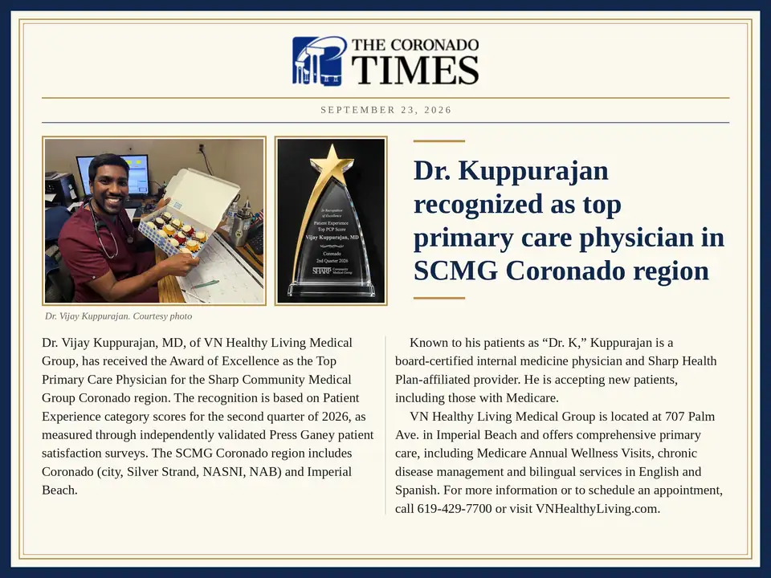
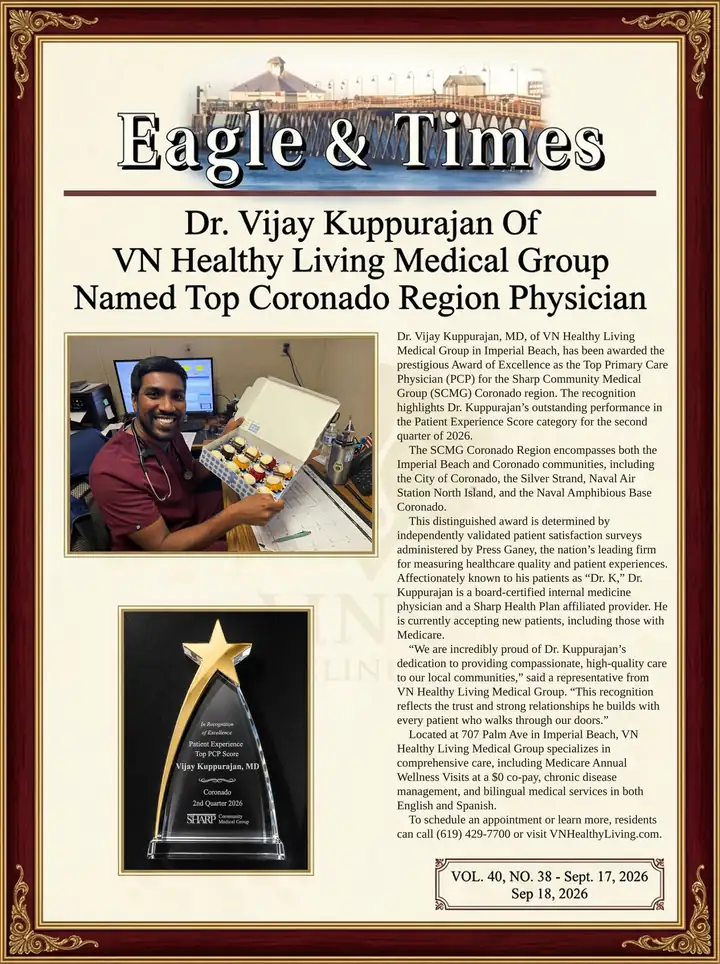
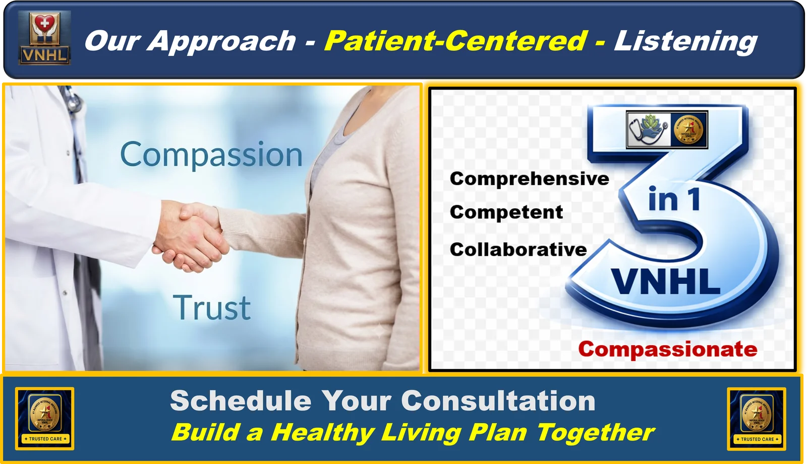
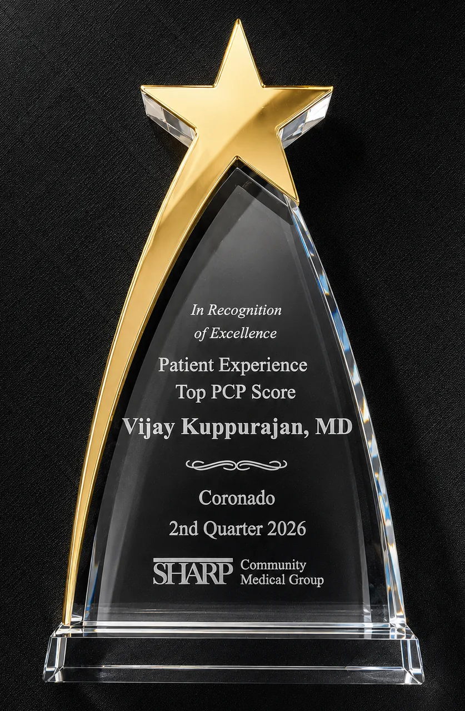

ESPECIALISTA EN MEDICINA INTERNA CERTIFICADO POR LA JUNTA, DEDICADO A UNA ATENCIÓN CENTRADA EN EL PACIENTE Y BASADA EN LA EVIDENCIA.
Conozca al Dr. K, quien lo pone a USTED PRIMERO en Imperial Beach
En las noticias
Noticias locales: nombran al Dr. K el mejor médico de atención primaria de la región de Coronado de SCMG
Dos periódicos locales informaron sobre el Premio a la Excelencia de Sharp Community Medical Group que recibió el Dr. K, quien atiende a las comunidades de Imperial Beach y Coronado.

The Coronado Times · 23 de septiembre de 2026
El Dr. Vijay Kuppurajan, de VN Healthy Living Medical Group, es reconocido como el mejor médico de atención primaria de la región de Coronado de Sharp Community Medical Group (SCMG), según las calificaciones de experiencia del paciente del segundo trimestre de 2026.

Eagle & Times · edición del 17 de septiembre de 2026
Cobertura local del Premio a la Excelencia del Dr. K como mejor médico de atención primaria de la región de Coronado de SCMG, que incluye Imperial Beach y Coronado, con base en encuestas de experiencia del paciente de Press Ganey validadas de forma independiente.
Conozca la atención del Dr. K
Trayectoria profesional
Formación y experiencia internacional
Experiencia principal
Especialidades clínicas
Nuestro compromiso con el paciente
Filosofía de atención
Lea nuestras preguntas frecuentes sobre la filosofía de atención ↗
UNA CULTURA CONFIABLE Y COMPASIVA EN VNHL
Todo comienza por ESCUCHAR

Atención primaria completa, desde los exámenes preventivos hasta el manejo de enfermedades crónicas, todo bajo un mismo techo.
Certificado por la junta, con formación internacional y afiliado a Sharp y SCMG: atención basada en la evidencia en la que usted puede confiar.
El Dr. K decide junto con usted cada paso: sus metas, sus preguntas y su plan de atención, en conjunto.
Ganador del Premio a la Atención Compasiva Dr. Sam Hooper, porque cómo se siente usted importa tanto como lo que escucha.
Comunidad y seguros
Al servicio de nuestra comunidad local
- Comunidades que atendemos: Con orgullo atendemos a las comunidades de Imperial Beach, Nestor, Coronado y el sur de San Diego.
- Seguros que aceptamos: La mayoría de los seguros privados, Medicare Original (con o sin plan suplementario) y el plan Medicare Advantage de Sharp-SCMG.
Dé el siguiente paso
Comuníquese con el Dr. K

Reconocido como el mejor médico de atención primaria de Sharp, el Dr. Kuppurajan está listo para darle la bienvenida a nuestro hogar médico y crear su plan de bienestar personalizado.
Encuéntrenos
Bienvenidos a nuestro consultorio
Atendemos a las comunidades de Imperial Beach, Coronado y el sur de San Diego. Aceptamos con gusto la mayoría de los seguros privados, Medicare Original (con o sin plan suplementario) y el plan Medicare Advantage de Sharp-SCMG. Llame a VNHL al (619) 429-7700 para aclarar los detalles de su plan.
Dirección y estacionamiento
Junto al Hampton Inn & Suites (esquina de Palm Ave y 7th)
Accesible según la ADA · Estacionamiento gratuito en el lugar
Teléfono, horario y transporte
Lun-Jue: 8 a. m.-5 p. m. | Vie: 8 a. m.-12 p. m. (mediodía)
Rutas de autobús MTS 933 / 934
Escanee con la cámara de su teléfono